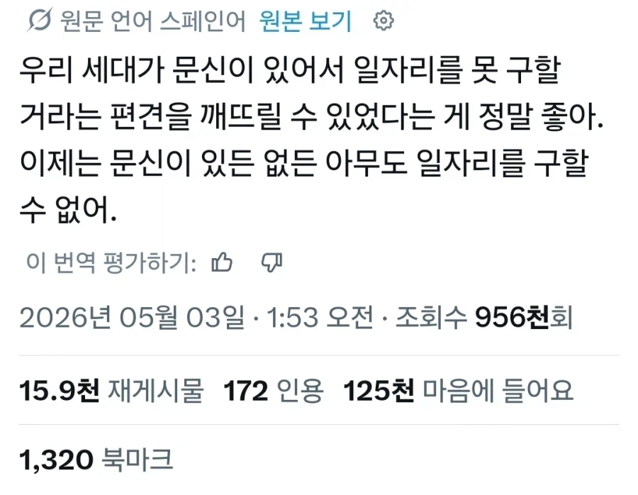

ㄷㄷ

ㄷㄷ
개드립 보면 비슷한 취급 당하는 것 같기도..
뭐...경력 공백기가 있으면 본인이 뭘했고 왜 쓸모있는지 끊임없이 증명해야한다는거에서 다를바없지ㅜㅜ
어허 자택 경비원
원문어가 스페인어라는데 스페인은 그런갑지.....
남미일수도 ㅋㅋㅋㅋㅋ
https://x.com/SoyDaniloDiaz/status/2060354891277594728
콜롬비안인가봄 프로필 지역에 콜롬비아 표시됨
문신있으면 무신정변에서 살아남기 힘들어서 안됨 ㅜㅜ
문과 : ☠️☠️☠️
ㅠㅠ 내가 왜 전신 이레즈미충이랑 똑같이 면접 탈락을 해야되는데!!
문신충(문신없음) 청년
못생긴 얼굴은 문신과도 같지
그럼 일자리가 없는 사람은 문신충과 다를바 없구나!